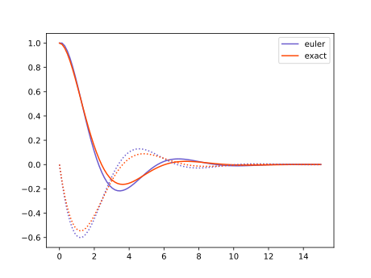

Tutorial: Dampened Harmonic Oscillator¶
The parareal module takes a rather principled approach, where all mathematical concepts are backed by types in Python's nascent static type (annotation) system.
Glossary¶
We may present the Parareal algorithm in abstract terms, and match those terms with corresponding type definitions in Python.
We need to define the following:
- Vector
- A
Vectoris an object that represents the state of a solution at any one time. On this state we need to be able to do addition, subtraction and scalar multiplication, in order to perform the Parareal algorithm. - Solution
- A
Solutionis a function that takes an initialVector, a timet_0and a timet, returning the stateVectorat timet. - Mapping
- A
Mappingis a function from one stateVectorto another, for example a mapping from a coarse to a fine mesh or vice-versa. - Fine Solution
- The fine solution is the solution at the desired resolution. If we were not doing parallel-in-time, this would be the integrator to get at the correct result. We may also use the fine solution to find a ground thruth in testing the Parareal solution.
- Coarse Solution
- The coarse solution is the solution that is fast but less accurate.
from __future__ import annotations
from typing import (Callable, Protocol, TypeVar, Union)
<<abstract-types>>
Vector¶
We have an ODE in the form
Here \(y\) can be a scalar value, a vector of values (say a numpy array), or any expression of state. A naive implementation of an ODE integrator would be
also known as the forward Euler method. We can capture the state \(y\) in an abstract class we'll call Vector. We chose this name because we expect this objects to share (some of) the arithmetic properties of mathematical vectors. Namely, we want to be able to add, subtract and scale them. The chunk below states this need of a basic arithmetic in the form of abstract methods.
TVector = TypeVar("TVector", bound="Vector")
class Vector(Protocol):
def __add__(self: TVector, other: TVector) -> TVector:
...
def __sub__(self: TVector, other: TVector) -> TVector:
...
def __mul__(self: TVector, other: float) -> TVector:
...
def __rmul__(self: TVector, other: float) -> TVector:
...
We don't actually need to implement these methods right now. All this is saying, is that any type that has these methods defined can stand in for a Vector.
Note that we don't make a formal distinction here between a state vector and a vector representing a change in state.
Suppose we have a Vector type \(T\), a Mapping is a function \(T \to T\):
Mapping = Callable[[TVector], TVector]
Problem¶
An ODE is then given as a function taking a Vector (the state \(y\)) and a float (the time \(t\)) returning a Vector (the derivative \(y' = f(y,t)\) evaluated at \((y,t)\)). We define the type Problem:
Problem = Callable[[TVector, float], TVector]
In mathematical notation the snippet above means:
Solution¶
If we have a Problem, we're after a Solution: a function that, given an initial Vector (the initial condition \(y_0\)), initial time (\(t_0\)) and final time (\(t\)), gives the resulting Vector (the solution, \(y(t)\) for the given initial conditions).
Solution = Union[Callable[[TVector, float, float], TVector],
Callable[..., TVector]]
Those readers more familiar with classical physics or mathematics may notice that our Problem object corresponds with the function \(f\). The Solution object, on the other hand, corresponds with the evolution operator \(\phi\):
Intuitively, \(\phi\) represents any method that solves (even approximately) our initial value problem.
Example¶
An example of a Problem would be the function,
in which case the corresponding Solution is,
Solver¶
The challenge is, of course, to find a way of transforming a Problem into a Solution. This is what integration algorithms, or solvers do:
If we look a bit closely at the definitions of Problem and Solution we'll notice that a solver is indeed a functional that accepts functions of \((y,t)\) as an input and returns functions of \((y_0, t_0, t)\) as an output.
An example of such a solver is the forward Euler method, that can be implemented as:
from .abstract import (Vector, Problem, Solution)
def forward_euler(f: Problem) -> Solution:
"""Forward-Euler solver."""
def step(y: Vector, t_0: float, t_1: float) -> Vector:
"""Stepping function of Euler method."""
return y + (t_1 - t_0) * f(y, t_0)
return step
Any existing solution can be iterated over to provide a solution over a larger time interval. The iterate_solution function runs a given solution with a step-size fixed to \(\Delta t = h\).
from .abstract import (Vector, Solution)
import numpy as np
import math
def iterate_solution(step: Solution, h: float) -> Solution:
def iter_step(y: Vector, t_0: float, t_1: float) -> Vector:
"""Stepping function of iterated solution."""
n = math.ceil((t_1 - t_0) / h)
steps = np.linspace(t_0, t_1, n + 1)
for t_a, t_b in zip(steps[:-1], steps[1:]):
y = step(y, t_a, t_b)
return y
return iter_step
Numeric solution¶
To plot a Solution, we need to tabulate the results for a given sequence of time points.
from .abstract import (Solution, Vector)
from typing import (Sequence, Any)
import numpy as np
Array = Any
def tabulate(step: Solution, y_0: Vector, t: Array) -> Sequence[Vector]:
"""Tabulate the step-wise solution, starting from `y_0`, for every time
point given in array `t`."""
if isinstance(y_0, np.ndarray):
return tabulate_np(step, y_0, t)
y = [y_0]
for i in range(1, t.size):
y_i = step(y[i-1], t[i-1], t[i])
y.append(y_i)
return y
<<tabulate-np>>
Numpy specialisation of `tabulate`
In the case that the `Vector` type is actually a numpy array, we can specialize the `tabulate` routine to return a larger array.def tabulate_np(step: Solution, y_0: Array, t: Array) -> Array:
y = np.zeros(dtype=y_0.dtype, shape=(t.size,) + y_0.shape)
y[0] = y_0
for i in range(1, t.size):
y[i] = step(y[i-1], t[i-1], t[i])
return y
Theory¶
The harmonic oscillator can model the movement of a pendulum or the vibration of a mass on a string.
where \(\omega_0 = \sqrt{k/m}\) and \(\zeta = c / 2\sqrt{mk}\), \(k\) being the spring constant, \(m\) the test mass and \(c\) the friction constant.
To solve this second order ODE we need to introduce a second variable to solve for. Say \(q = y\) and \(p = y'\).
The Problem is then given as
def harmonic_oscillator(omega_0: float, zeta: float) -> Problem:
def f(y, t):
return np.r_[y[1], -2 * zeta * omega_0 * y[1] - omega_0**2 * y[0]]
return f
from parareal.abstract import (Problem)
from typing import Callable
from numpy.typing import NDArray
import numpy as np
<<harmonic-oscillator-problem>>
<<harmonic-oscillator-solution>>
if __name__ == "__main__":
import numpy as np # type: ignore
import pandas as pd # type: ignore
from plotnine import ggplot, geom_line, aes # type: ignore
from parareal.forward_euler import forward_euler
from parareal.iterate_solution import iterate_solution
from parareal.tabulate_solution import tabulate_np
OMEGA0 = 1.0
ZETA = 0.5
H = 0.001
system = harmonic_oscillator(OMEGA0, ZETA)
def coarse(y, t0, t1):
return forward_euler(system)(y, t0, t1)
# fine :: Solution[NDArray]
def fine(y, t0, t1):
return iterate_solution(forward_euler(system), H)(y, t0, t1)
y0 = np.array([1.0, 0.0])
t = np.linspace(0.0, 15.0, 100)
exact_result = underdamped_solution(OMEGA0, ZETA)(t)
euler_result = tabulate_np(fine, y0, t)
data = pd.DataFrame({
"time": t,
"exact_q": exact_result[:,0],
"exact_p": exact_result[:,1],
"euler_q": euler_result[:,0],
"euler_p": euler_result[:,1]})
plot = ggplot(data) \
+ geom_line(aes("time", "exact_q")) \
+ geom_line(aes("time", "euler_q"), color="#000088")
plot.save("plot.svg")
Exact solution¶
The damped harmonic oscillator has an exact solution, given the ansatz \(y = A \exp(z t)\), we get
and thus the general solution:
This dynamical system has three qualitatively different solutions, each of them depending on the sign of the contents of the square root. Particularly, if the contents of the square root are negative, the two possible values for \(z\) will be complex numbers, making oscillations possible. More specifically, the three cases are:
- overdamped (\(\zeta > 1\) and, thus, both \(z\) are real numbers)
- critical dampening (\(\zeta = 1\) and \(z\) is real and equal to \(-\omega_0\))
- underdamped (\(\mid \zeta \mid < 1\), and \(z = -\omega_0\zeta \mp i \omega_0 \sqrt{1 - \zeta^2}\)).
The underdamped case is typically the most interesting one. In this case we have solutions of the form:
Given an initial condition \(q_0 = 1, p_0 = 0\), the solution is computed as
def underdamped_solution(omega_0: float, zeta: float) \
-> Callable[[np.ndarray[np.float64]], np.ndarray[np.float64]]:
amp = 1 / np.sqrt(1 - zeta**2)
phase = np.arcsin(zeta)
freq = omega_0 * np.sqrt(1 - zeta**2)
def f(t: np.ndarray[np.float64]) -> np.ndarray[np.float64]:
dampening = np.exp(-omega_0*zeta*t)
q = amp * dampening * np.cos(freq * t - phase)
p = - amp * omega_0 * dampening * np.sin(freq * t)
return np.c_[q, p]
return f
Plot harmonic oscillator
from typing import ( Callable )
import matplotlib.pylab as plt
import numpy as np
from parareal.abstract import ( Problem )
from parareal.forward_euler import ( forward_euler )
from parareal.tabulate_solution import ( tabulate )
<<harmonic-oscillator-problem>>
<<harmonic-oscillator-solution>>
omega_0 = 1.0
zeta = 0.5
f = harmonic_oscillator(omega_0, zeta)
t = np.linspace(0.0, 15.0, 100)
y_euler = tabulate(forward_euler(f), np.r_[1.0, 0.0], t)
y_exact = underdamped_solution(omega_0, zeta)(t)
plt.plot(t, y_euler[:,0], color='slateblue', label="euler")
plt.plot(t, y_exact[:,0], color='orangered', label="exact")
plt.plot(t, y_euler[:,1], color='slateblue', linestyle=':')
plt.plot(t, y_exact[:,1], color='orangered', linestyle=':')
plt.legend()
plt.savefig("harmonic.svg")
targets += harmonic.svg
harmonic.svg: plot-harmonic-oscillator.py
> python plot-harmonic-oscillator.py
We can compare the results from the numeric integration with the exact solution.

Using Parareal¶